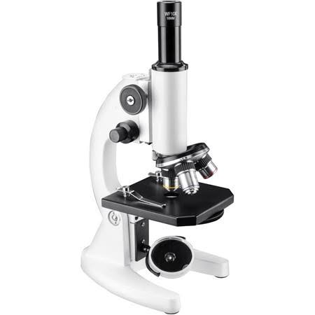

History And Classification Of Microorganisms
Introduction
Before the eighteenth century, people believed that there was a magical power in the world that could turn juice into wine, or make healthy people sick, and even die within a few days. It wasn't until Antony van Leeuwenhook observed some "little animals" in the rainwater with a homemade microscope that people began to be interested in these little bugs.
These small creatures are what we now call microorganisms. According to the currently accepted classification, microorganisms can be divided into five categories, bacteria, fungi, viruses, algae and protozoa. These Organisms surround us and everywhere. They make and also can destroy the world.
“I study microbes as they form an integral and essential part of our livesMy favourite bacteria are filamentous actinomycetes, which are prolific aintibiotic producers.”—— Dennis Claessen